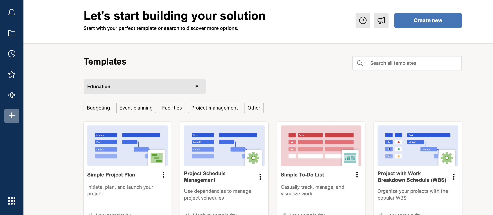
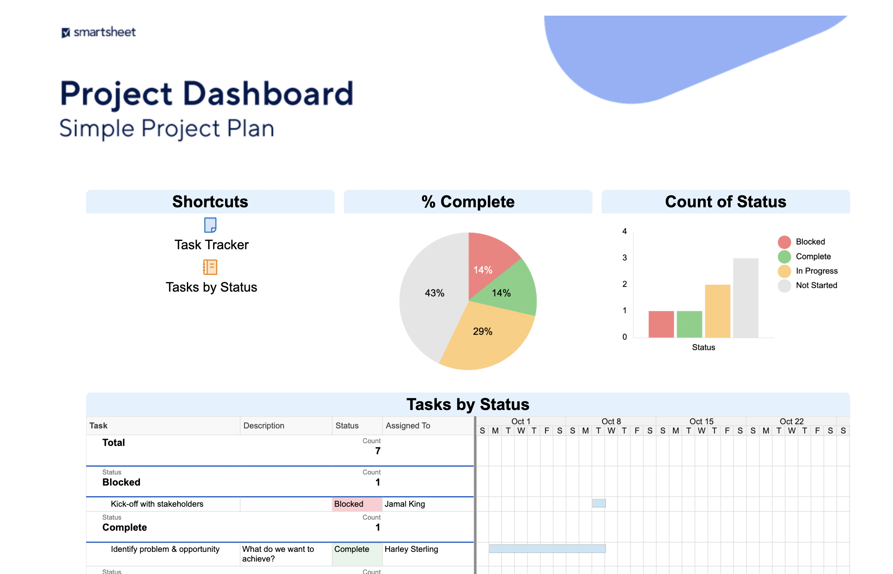
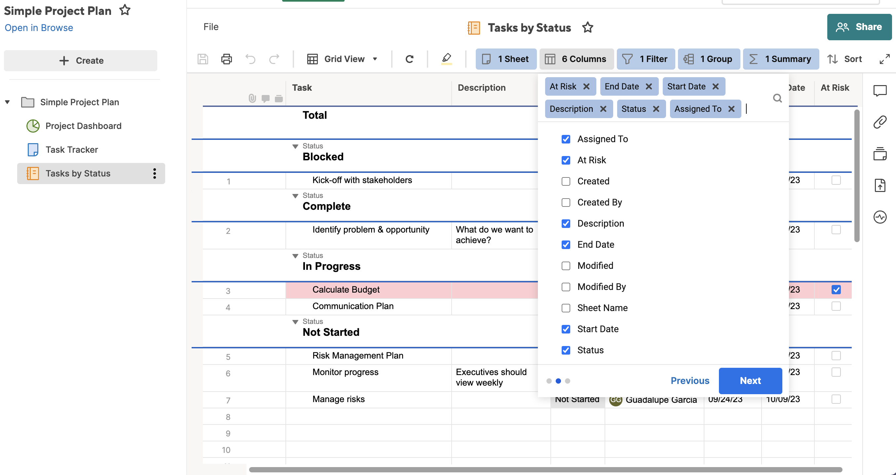
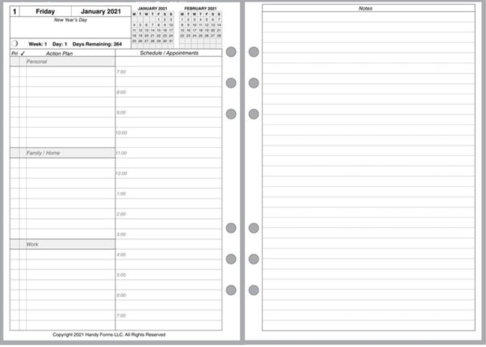
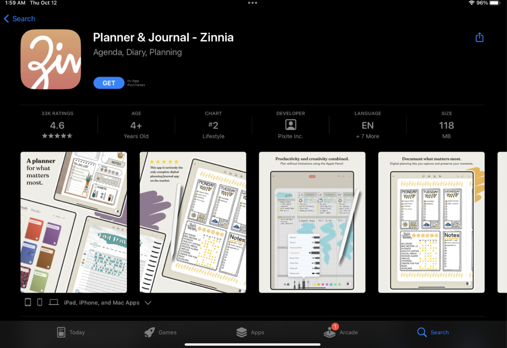
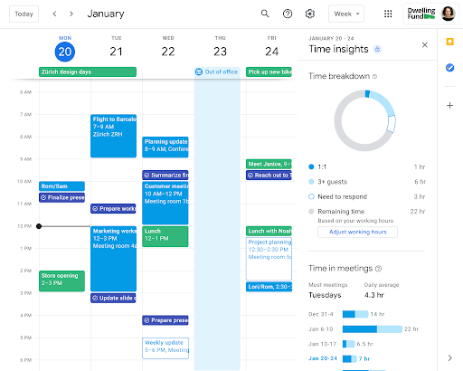
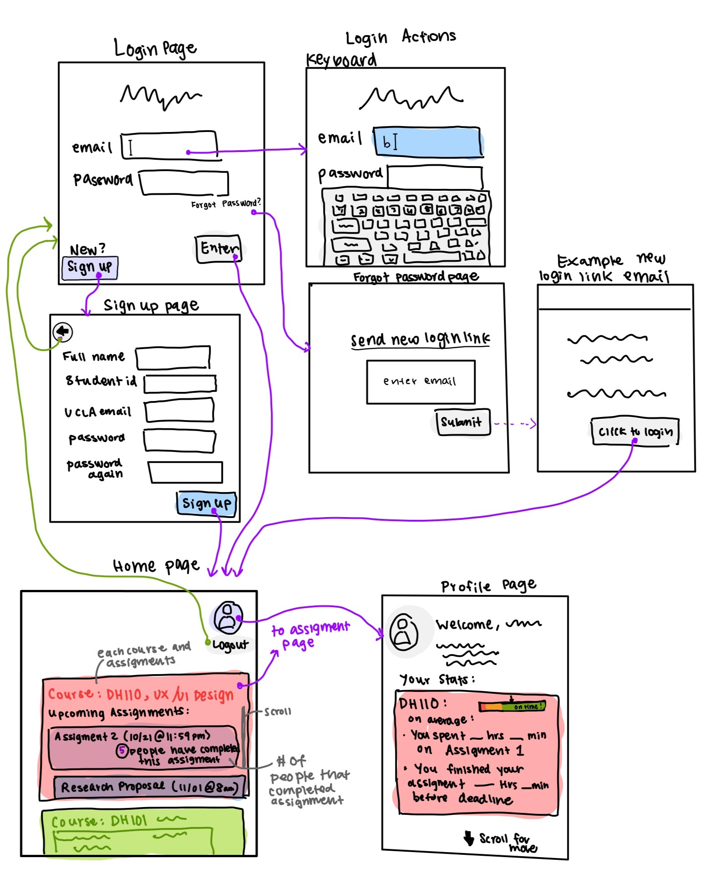
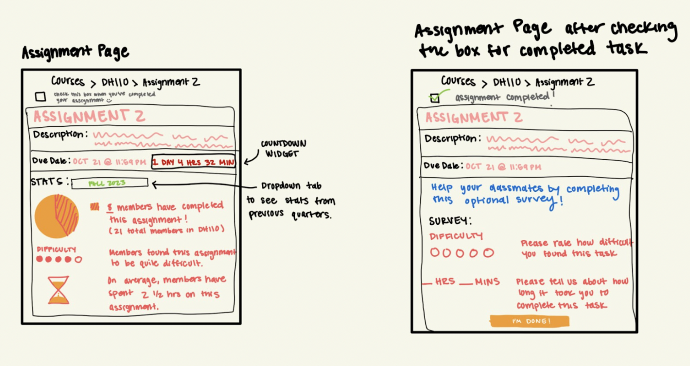

Research
We will explore three major time management tools!
Smartsheet is a tool that comes up with the search “time management tools for students”. Smartsheet is used by over 10 million people, and 74,000 brands in 190 countries to drive better collaboration, plan tasks, and facilitate time management. Therefore, it is one of the leading websites for time management. After creating an account, Smartsheet allows users to select from a variety of templates targeted to different use cases such as budgeting, event planning, facilities, project management and more.
There are instructions users can follow to walk through the user flow of a template. For the simple project plan, users can navigate through three pages on the side, “Project Dashboard”, “Task Tracker”, and “Tasks by Status”. At first glance, the website is overwhelming with information, customizations, and more. However, after spending a bit more time I found the project dashboard to be most useful for tracking where we are with tasks.
However, despite this tool coming up in search results, I don’t find it friendly for students, especially because the tool mostly focuses on collaborative projects, and will take many clicks and customizations to be formatted for students to easily use for assignments. Furthermore, students lives are managed by time intervals, especially with classes and meetings, so not having an easy way to view a time-by-task organizer makes it a bit more tricky for students. With so many tasks and hectic lives, I believe students would appreciate a more minimalist design as opposed to design of smart sheet. However, I do believe that all the functionality for smart sheet is intuitive and easy to understand, such as icons for editing, sharing, viewing, presenting, etc. These icons are often standard in other applications so users can easily infer their use cases. I think integrations with the spreadsheet for task tracker is helpful as well, since most students have experience with spreadsheets and is not another thing to completely learn from scratch.
The next tool that we will be exploring is a daily/weekly planner. These time management tools are popular both in the digital and physical world. To stay organized, many student keep a daily planner in their backpacks or on a digital platform (e.g. Notion template, app, website, etc.). These planners usually consist of space to plan out tasks according to the time of day (around 7AM to 7PM) as well as a notes section to write down additional information.
Digital planners are growing popular in our increasingly digital world. Apps like the one shown above (Zinnia) are used by thousands of people to help them organize their daily lives. The Apple iPad and Pencil (and other similar devices) are contributing to the switch from physical planners to digital ones, since they mimic the feel of writing in a physical planner, just with more capabilities and features.
Another popular time management tool is Google calendar which allows anyone with a google email to create a digital calendar outlining various meetings, tasks, reminders, classes, and more. Google calendar allows you to sync with your email so any meetings you are invited to can automatically show up in your calendar. It allows you to also schedule non-meeting items like grocery shopping or eating lunch so you can better break down your day and schedule time for completing various tasks. Many students use google calendar because it is easy to break up sections into time. However, google calendar still doesn't offer the best capability for scheduling assignments since students mostly only record deadlines. Furthermore, adding all the assignments may clutter the calendar which takes away from the aesthetic minimalist design. Other than this, google calendar offers a seamless user experience where the user has many different options for customization, and even can analyze their own time breakdowns using calendar features.

ITERATIVE DESIGN PROCESS
With our proposed time management app, we hope to cater to students by providing an app that allows students to see how many people have completed assignments so far, and the time it may take, so students are less inclined to leave assignments to the last minute and manage their time better. Initially, we were brainstorming between an app that integrates physical and digital planning tools together and one that prevents procrastination, however after getting a second round of feedback from our users, we realized that the later app idea would be more useful for them. Our design flow includes walking the user through account set up and what the main home page view would look like. Buttons like back and forgot password were later added after user feedback which gives users more controls and also helps signifiers be more clear. We also showcase the assignment page which allows users to get specific information about an assignment for a class, for instance time it takes, how many have completed, difficulty. Seeing others finish an assignment motivates students to get started earlier and therefore, manage their time better.
Designs! Here are some high fidelity sketches of our app:
 